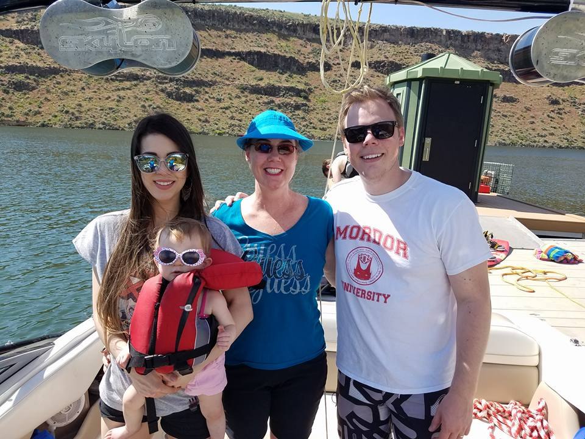
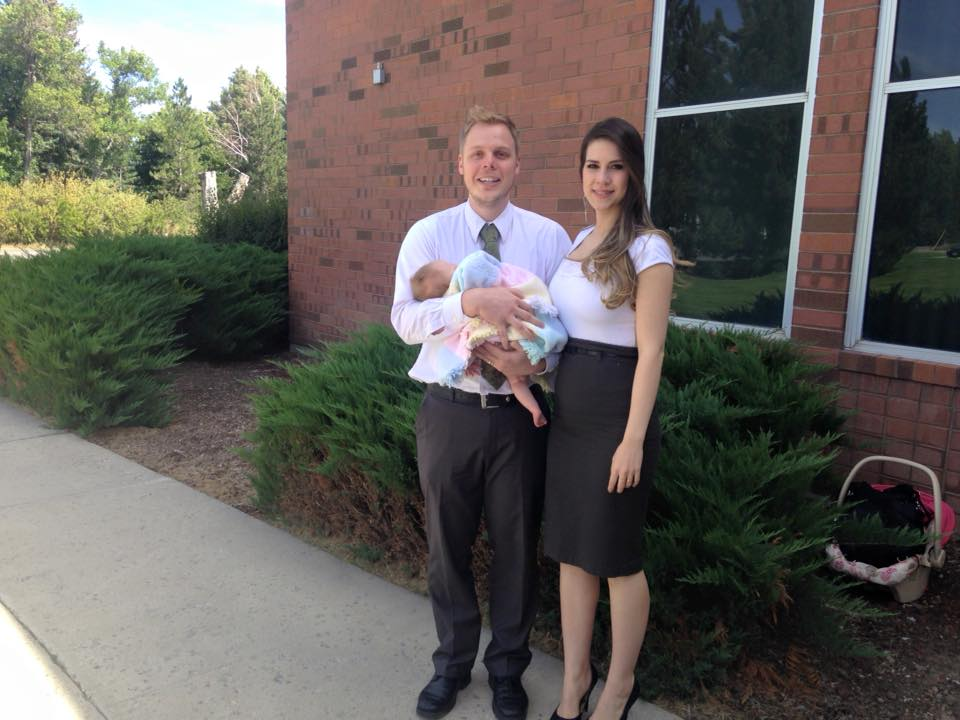
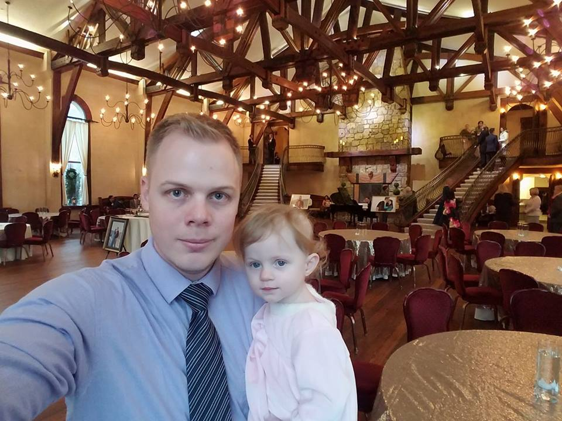
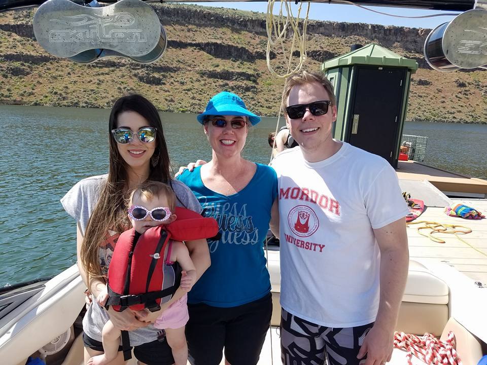
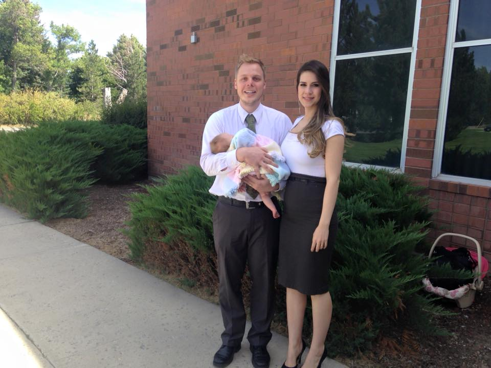
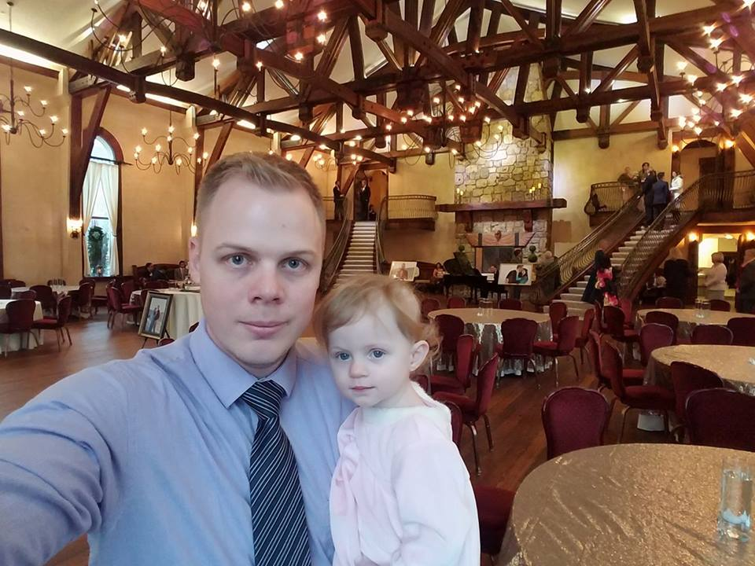

This is me:
I'm from Porto Alegre Brazil. I got called to serve in the Illinois Peoria Mission.
I got the opportunity to know Nauvoo and a lot of church history. I've been married for
6 years now and my wife and I have a beautiful daughter. I'm a SE major and I'm
excited to have my internship next semester and finally put in practice everything I'm
learning in school. For fun, I like to play games, play the drums and travel.
Fact 1
Before coming to the USA. We had an English Language School
in Brazil. Most of our students were engineers and that's how I fell in love
with technology.
Fact 2
After a few years doing good in our business and working
really hard, we felt prompt by the Spirit to sell the school and continue
our education. That was the hardest decision we ever made, but that
gave us the chance to come to the US and invest in our future.
Fact 3
We came to Salt Lake City where I graduated with an A.S. in
Business from the LDS Business College and decided to pursue a B.S. in Software
Engineering.
 




